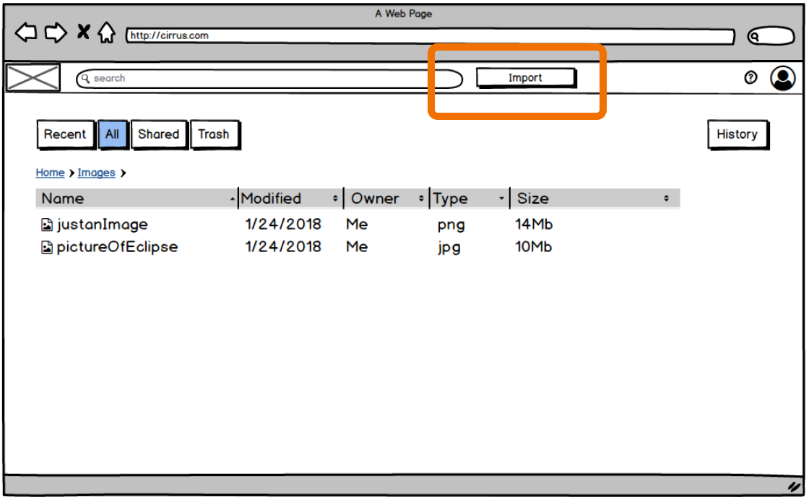
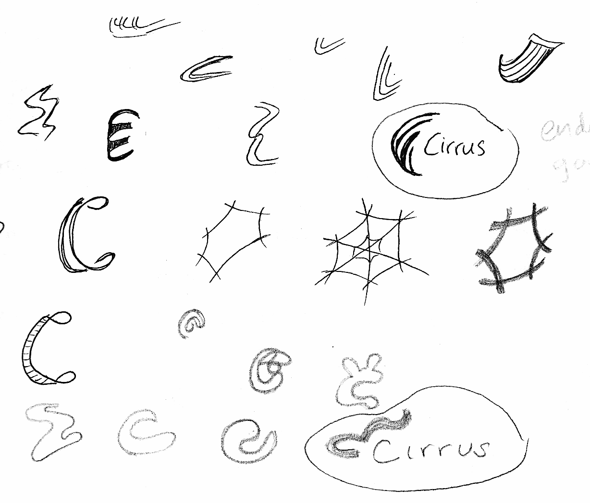

CIRRUS
Cirrus was my first large-scale project at Bloc, where I apprenticed under Alissa Likavek. The challenge was to create not just “another cloud storage app”, but one that would be unique, and have a chance to compete against the best by leveraging strengths that other products lack.
Research revealed a niche Cirrus could exist: providing a better sharing experience and a more flexible way to organize content.
Through the process of drawing user flows, sketching, iterating and testing, it was eye-opening to see how well the design process worked to create just the right product.
Research + Analysis
User Research
Discovering what the user would actually use.
Taking the long list of requirements, my first job was to find what users liked, wanted, and were most peeved about. This was also a good time to find out what elements were top-of-mind for users vs. just nice-to-haves.
Writing up a healthy set of questions, I sent texts to friends, family, posted on facebook, reddit, a couple slack channels to solicit responses to my google survey. Luckily my efforts were rewarded by thirty-three respondents, 75% of which already use Google Drive. Score!
Main Frustrations
-
35%Confusing navigation or organization.
Connectivity and apps crashing. -
50%Running out of storage space.
Shared content not accessable by collaborators. -
15%Other
"The following aspects of collaboration are very exciting to me."
-
72%Permission levels such as viewing and editing
-
63%Editing is reflected across devices and accounts automatically.
-
56%Sharing content with others via link or social media.
-
% respondents found these very exciting
Competitor Analysis
What are other apps doing?
Competitor Strengths
- Version history at 30 days to 1 year
- Focus on security (mainly box)
- Sophisticated permission levels
Where Cirrus could shine
- Geared towards personal use
- More flexible organization options
- Easier sharing, intuitive interface

Personas
I don't mean to stereotype, but...
I lumped my users into demographically similar groups, and came up with 3 personas. Overall, ease of sharing emerged as a clear need for all three.
Raul
Sensitive Data Dude
William
Tinkerer
Throughout the process, I referred back to these personas to remind myself what goals I was trying to fulfill, and if I was sorely missing considering any of them.
User Stories
-
Breaking it down in plain english
I divided and prioritized my user stories under four different user cases.
Then I spent some agonizing minutes deciding how to prioritize them. It felt like educated gambling.
Many of the basic needs were clear through the user survey, but many of the frustrations described how these basic functions were defective + advanced requests that would require the basics to be already present.
-
Top stories by category
-

Collaborator
“I want to make sure ANYONE can view content that I've shared with them, regardless of if they have my cloud storage service, what device they are on, or what browser they are using.”
“I want my files to automatically sync across devices, and viewable without refreshing the page”
-

Backuper
“I do not want files to be deleted without my consent.”
“I want it to be clear what content is being uploaded automatically to give peace of mind (via a save/delete history?)”
Interaction Design
User Flows
Connecting the dots... and other shapes
I used sketching to be messy, brainstorming on how a user might go about completing tasks such as signing up, adding content, and sharing something.

Distilling the essence, I used draw.io to digitize the flows.
Sharing
Adding an Item

Content Strategy
Mapping out every single page.
So far, we have the user flows according to user personas and user stories. To help me with wireframing, I needed to map out my content into specific pages. This is called the sitemap, which just outlines proposed content of each page, and how they may be connected to one-another. I used an app called Flow Mapp.
Green = Items depicted on wireframe, and in high fidelity mockups.
Turquoise = Visible to non-cirrus users.
Purple = Not implemented at this time.
Wireframing
Never enough X-es, O-s, boxes, and Squiggles
Finally! Lots of research has gone into getting to this point. I relied heavily on my sitemap, user flows, and user stories as I started to sketch out what my pages might look like using old fashioned paper and pen. These are different ideas how I may lay out my user dashboard.

Digitize and Iterate
Upload? Add? Save? Import?
Button to upload says “Import” vs. “Add” with dropdown in second version. Seems simple, but trying to find the right wording for this action ended up being the longest saga involving multiple user tests.

Removing Clutter.
In my first iteration, the quick tools were always visible. I revised the mockup so they only appear for a row when hovering on a row (desktop solution). For touch-only screens and mobile, a different solution would have to be implemented.
Mockups
Aka wireframes round-two.
After creating a sequence of wireframes, I refined them to create clickable mockups using Invision.

Testing the Mockups
For consistency, I created a testing script to use. This was the first time my ideas saw light of day. With a mixture of nervousness, excitement, and kicking myself to stop making perfectionist tweaks, I coordinated remote and in-person tests, asking users to complete relatively “simple” tasks associated with the top user stories from my research phase.
Branding
Sketching
Best done on the couch with a cup of tea.
Taking a pause from the layout and content iterations, I dove into creating a brand for Cirrus. At this time, I already had the name “Cirrus” in mind. Cirrus is a type of high-flying light-whispy cloud. I wanted my users to feel light, elegance when using the application. I used a mind map to come up with more words and ideas to accompany Cirrus.

I took a wrong turn
Probably from over thinking the whole strategy, I was trying too hard to avoid the analogy to ice and fragility. Instead, I tried to create more of a grounded feel, and pivoted my design for more earthy tones.

After consulting with my mentor and some friends, I realized that I had lost the wispy, light feel that would resonate with my users. Terra was a name and logo which would work better for for a landscaping company, something where you could hold the product in your hand. Holding a laptop doesn’t count.
Seeing the blue sky!
Even though I had gone pretty far in the wrong direction, having digitized my sketches and was already matching typefaces, I went back to the drawing board one morning with a hot tea in my hand, my mind still in a sort of sleepy-dreaming state. It was here that I came up with these sketches. Picking the top circled, I digitized them. I was suprised how fast this all matriculated! Like it was a baby waiting to be born.

Digital Logo
Black and White first.
I used the typeface Quicksand Regular for the words Cirrus, but modified the kerning manually so the letters look more optically evenly spaced out. This typeface was most analogous to the logo, which I also trapped into a circle with similar thickness.
Although it was attractive to keep the C cradled in the curve of the cloudlike fingers, ultimately, the circle worked better in a standalone way, and makes the logo more versatile overall.
Design Guide
Guidelines are allowed to evolve.
Creating design guides are one of my favorite parts of the process. It is where my logical thinking and affinity to visual beauty come together. My quest is for simplicity and harmony, especially with this brand.
Initially, I picked Raleway and Montserrat as Title and Body text respectively, but learned quickly that there was not really a compelling reason to pull both those fonts in (extra download overhead!) because they were so familiar. Montserrat had enough weight variety to do the heavy lifting in all typography.
Visual Design
High Fidelity Prototypes
Homepage: from blueprint to reality.
Having part in this project from its inception to developer handoff, it was crazy to see how much work goes into even putting a pixel on the page that will actually see day of light in production.
With colors, typography, a solid logo, basic wireframes and a list of things to fix, I sat down to design the high fidelity mockups. I started with the easy stuff:
Parts that evolved from the first draft.
Final Version

Easy? Well no, but the user stories for a new user were relatively straightforward, with not too many complicated tasks required.
Mobile Dashboard
Next, I changed my perspective, literally - to what the dashboard may look like on a mobile device. Although this interaface wasn’t the main focus, it was important to start thinking small screen too.
What if I thought up a fancy solution on the big screen that would *suck* on the mobile. I didn’t want to have to alter the look too much. The users did say they want this app available on any device.
Initial Version
Final Version
Desktop Dashboard Evolution


Testing
Round 1: Mockup Testing
What’s black and white and moves when you click?
A wireframe mockup.. duh!
All jokes aside, I ran this test before I did any branding.
Just like you can’t move the foundation of a house once the walls are up without having to start over, running low fidelity tests gave me a good base on which to create the branded high-fi prototypes.
Here are the results combined from four user tests.
The Good
- "Ooh I like the thumbs up!"
- "It's great that the quick tools are right there when I hover."
- "I can tell my file is uploading. :)"
The not so good
Dragging-Dropping. Test takers had trouble with how to move items. In the above screenshots, the folder icon wasn’t understood. Instinctively, they said they should be able to drag the name of the file over a folder to drop it in. This included not only the line item, but in the breadcrumbs too. Dragging is more intuitive than clicking buttons.
Round 2: High-Fi Testing
Things are never really perfect.
The best part about being a UX designer is that if you are not sure how something should work, the best way to find out is to test users. It’s great that we don’t have to invent it all by ourselves!
I thought I had ironed out everything by the time I was ready to test my high-fidelity prototypes, but there’s always something to tweak, especially when bringing in new testers who haven’t tested the product before.
Improvements

Keep quick tools on the item row when it is selected!

In the grid layout, the select circle should be on the top left or right.

Order files by last modified date by default, and remove Recent tab.
Hotkeys should be enabled including Ctrl-Z, Ctrl-X, Ctrl-C, Ctrl-V.

Include toggle to grid/list view and pagination.
Quick tool options made available on right-click.
Colors and layout worked well. Yay research and wireframing!

Upload area say “Upload file or folder” instead of “Add”
Final Design
Incorporating testing feedback
After the preference testing, which provided invaluable insights and final tests, my prototype dashboard evolved from sketches, to Balsamiq wireframes, to high-fidelity prototypes with interaction.
Reflection
The Design Process really works.
I am amazed how far users’ feedback combined with my experience and studying have brought this product where I truly believe it could compete with “the big ones” like google and dropbox if implemented correctly, and further iterated on using the same testing principles.
Lessons Learned
There’s no such thing as too much sketching
Trust your gut instinct; stop and go back, or keep iterating if it doesn’t feel right.
The process will take 2 or 3 times as long as you think. Most people don’t get why.
What's Next?
There are many more user stories in the queue that haven’t been implemented. That is where I would go to if there is more time, or a second design sprint.
As a Designer, I would go into more details and thinking out test cases and acceptance criteria for the developer to use when iterating on their code to match to the original user stories.